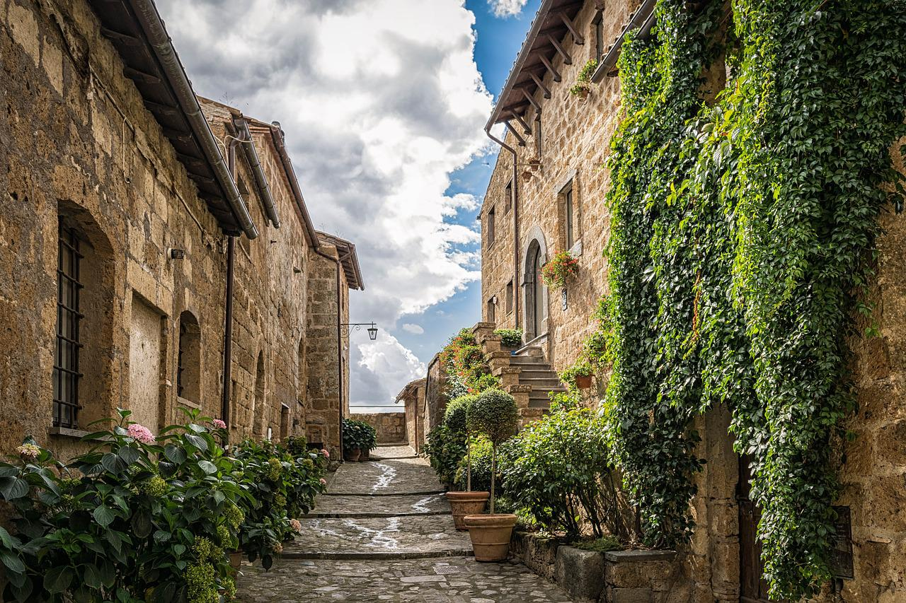

What Happen To Dinosaurs

Exactly a long time back, plus or minus a few centuries, a 10 vast space rock rammed into our planet. The effect impacted out a huge cavity and hurled a lot of material into the climate. A portion of the sulfur-rich trash harmed the sky, releasing deluges...
Read More
Dinosaur- Last Dino Standing
The finish of the dinosaurs was the point at which the worldwide environment was changing and the ocean level dropping. A shallow ocean that covered the core of North America depleted. Lands that were previously isolated by water were currently associated...
Read More
YUMMY Recipes Under $10
Simple weeknight dinners on a careful spending plan ARE conceivable. We've gathered together our number one modest supper thoughts for reasonable feasts that will take care of a group of four for just $10 (or less!).Teriyaki Chicken ThighsWhat you need:Ch...
Read More
How to Get Motivated
Don't feel discourage it is a very hard thing even that 99% of the world still struggle with.What Is Motivation, Really? It is to be inspire Without inspiration, you'll surrender after a couple of bombed endeavors, or even on the main intense test that co...
Read More
Everyday DIY hack
Number One. To get an intense to-break secret word, utilize non-English characters on your console.SecondTo edit a long paper, glue your article in Google Translate and pay attention to it. This commits it simpler to get errors, and the actual apparatus c...
Read More
4 Days Workout Plan With Amazing Results
Day 1: Chest, Back, Shoulders, Legs, Biceps, Triceps Gym Workout PlanChest exercise - Barbell Bench Press - target 4 arrangements of 8 repsBack exercise - Lat-pulldowns - target 4 arrangements of 10 repsShoulders exercise - Seated Dumbbell Press - target ...
Read More
Post 6 Headline

Get Going to Make the Pistol Template With a 22 Cm by 14 Cm CardboardPull a Template firearm or gun or any sort of weapon on the CardboardRemove Unnecessary CardboardMake Another Cut Out of Same Dimensions Without Trigger Portion and Make 2 Cut Out for Ea...
Read More
Homemade Scented Candles

SScented Candles at HomeSupplies NeededLight waxHeat-safe glass containersTwofold evaporator potSilicone spatulaNatural ointmentsLight wicksWick focusing gadget or chopsticksWick trimmerStage 1: Prep Your ContainerBefore you begin dissolving wax or blendi...
Read More
Tech Hub In Nairobi
Nairobi a gathering of youngsters are building robots utilizing engines and wires, while in a contiguous room a kid is figuring out how to utilize programming to spell their name on a PC.This hive of tech movement is occurring at the central command of th...
Read More
The First Rockstar Ever
Franz Liszt was the best piano virtuoso of his time; perhaps the absolute best! His exciting procedure and enthralling show character transformed him into a definitive hero of the nineteenth hundred years. Nonetheless, this reputation additionally made vu...
Read More
Historical Facts That Sound Too Fake to Believe
In 1986, two individuals passed on the grounds that 1.5 million inflatables were sent off high up during a raising money occasion in Cleveland, Ohio.A world record for the concurrent arrival of inflatables transformed into a calamity that caused claims an...
Read More
Investigating the Mediterranean
Almost 50% of the Mediterranean locale's horticultural creation esteem comes from four yields: grapes (14%), wheat, tomatoes, and olives (9% each) (Exhibit 2). Of the last three, Mediterranean nations produce around 90% of the all out worldwide stockpile....
Read More